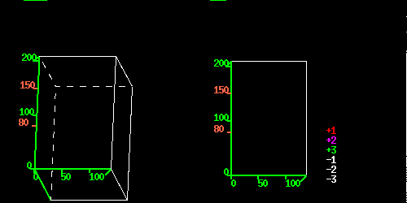

GenBank Accession Number for this sequence: R65270
(Each Full Line is 40 bp Long)
TCCTCACTTTCATCAGCCGTTTTNAATCTCCGGCGACTTG ACAGAGAAGAACAAGGAAGAAGACTAAGAGAGAAAGTAAG AGATAATCCAGGAGATTCATTCTCCGTTTTNAATCTNCCT CAATCTCATCTTCTTCCGCTCTTNCTTTCCAAGCTCATAA AAAATGGCTGAGGCTGATGATATTCAACCAATCGTGTGTG ACAATGGTACCGGTATGGTGAAGGCTGGATTTNCAGGAGA TGATGCTCCCAGGGCTGTTTTTCCCAGTNTTGTTGGTAGG CCAAGACATCATGGTGTCATGGTTGGNATGAACCAGAAGG ATGCATATNTTGGTGATGAAGCACAATCCANGNGAGGTAT TCTTACCTTGAAGNATCCTTTTTGNGCATGGNGTTTTNAG CACNNGGGGTG
Sequence Length: 411

Corresponding DNA : start = 9, end = 113
High
More DB Acc Fr Shift? Score P-value Description
---- -- --- -- ------ ----- ------- -----------
goto pir S10020 2 N 292 7.7e-25 actin 1 - rice
goto pir S47090 2 N 292 7.7e-25 actin - sorghum PEP:gi|499012|gp|X79378|SVSOAC1_1...
goto gi 20322 2 N 292 7.7e-25 Oryza sativa RAc1 mRNA for actin. [Oryza sativa]
goto gi 295885 2 N 292 7.7e-25 actin [Oryza sativa]
goto pir JA0066 2 N 291 9.9e-25 actin - Arabidopsis thaliana PEP:gi|166582|gp|M2 ...
goto pir S31933 2 N 291 9.9e-25 actin - common tobacco PEP:pir|S35257|S35257 acti...
goto pir S20098 2 N 291 9.9e-25 actin - potato PEP:gi|21544|gp|X55751|STPOAC97_1 ...
goto pir S20093 2 N 290 1.3e-24 actin - potato PEP:gi|21534|gp|X55752|STPOAC101_1...
goto pir S20094 2 N 290 1.3e-24 actin - potato PEP:gi|21536|gp|X55749|STPOAC58_1 ...
goto gi 553858 2 N 272 2.0e-24 alpha-cardiac actin [Mus musculus]
More DB Acc Strand Score P-value Description ---- -- --- ------ ----- ------- ----------- goto emb Z25952 Plus 1620 1.1e-129 A. thaliana transcribed sequence; clone VBV24-599 ... goto gb R29797 Plus 1572 9.1e-126 12402 Arabidopsis thaliana cDNA clone 161E2T7. goto gb T46735 Plus 1567 1.6e-125 9998 Arabidopsis thaliana cDNA clone 141M5T7. goto gb R30501 Plus 1516 3.4e-121 13106 Arabidopsis thaliana cDNA clone 164G21T7. goto gb T21821 Plus 1507 2.2e-120 3829 Arabidopsis thaliana cDNA clone 103C21T7. goto gb T76037 Plus 1457 2.7e-116 10815 Arabidopsis thaliana cDNA clone 140H23T7. goto gb T43759 Plus 1350 2.6e-107 7022 Arabidopsis thaliana cDNA clone 123C3T7. goto gb T20889 Plus 890 7.1e-69 2897 Arabidopsis thaliana cDNA clone 89C9T7. goto emb Z37638 Plus 782 4.6e-60 A. thaliana transcribed sequence; clone VBVHC11; ... goto emb X17526 Plus 698 2.5e-49 D.carota RNA for actin gene Ac1.
Score: 292 Frame = 2 Identities = 83% Positives = 89%164 MAEADDIQPIVCDNGTGMVKAGFXGDDAPRAVFPSXVGRPRHHGVMVGMNQKDAYXGDEA 343
MA+A+DIQP+VCDNGTGMVKAGF GDDAPRAVFPS VGRPRH GVMVGM QKDAY GDEA
1 MADAEDIQPLVCDNGTGMVKAGFAGDDAPRAVFPSIVGRPRHTGVMVGMGQKDAYVGDEA 60
344 QSXXGILTLKXPF 382
QS GILTLK P+
1 QSKRGILTLKYPI 73
____________________________Hit Accession Number S47090 of PIR database
Score: 292 Frame = 2 Identities = 83% Positives = 89%164 MAEADDIQPIVCDNGTGMVKAGFXGDDAPRAVFPSXVGRPRHHGVMVGMNQKDAYXGDEA 343
MA+A+DIQP+VCDNGTGMVKAGF GDDAPRAVFPS VGRPRH GVMVGM QKDAY GDEA
1 MADAEDIQPLVCDNGTGMVKAGFAGDDAPRAVFPSIVGRPRHTGVMVGMGQKDAYVGDEA 60
344 QSXXGILTLKXPF 382
QS GILTLK P+
1 QSKRGILTLKYPI 73
____________________________Hit Accession Number 20322 of GenInfo database
Score: 292 Frame = 2 Identities = 83% Positives = 89%164 MAEADDIQPIVCDNGTGMVKAGFXGDDAPRAVFPSXVGRPRHHGVMVGMNQKDAYXGDEA 343
MA+A+DIQP+VCDNGTGMVKAGF GDDAPRAVFPS VGRPRH GVMVGM QKDAY GDEA
1 MADAEDIQPLVCDNGTGMVKAGFAGDDAPRAVFPSIVGRPRHTGVMVGMGQKDAYVGDEA 60
344 QSXXGILTLKXPF 382
QS GILTLK P+
1 QSKRGILTLKYPI 73
____________________________Hit Accession Number 295885 of GenInfo database
Score: 292 Frame = 2 Identities = 83% Positives = 89%164 MAEADDIQPIVCDNGTGMVKAGFXGDDAPRAVFPSXVGRPRHHGVMVGMNQKDAYXGDEA 343
MA+A+DIQP+VCDNGTGMVKAGF GDDAPRAVFPS VGRPRH GVMVGM QKDAY GDEA
1 MADAEDIQPLVCDNGTGMVKAGFAGDDAPRAVFPSIVGRPRHTGVMVGMGQKDAYVGDEA 60
344 QSXXGILTLKXPF 382
QS GILTLK P+
1 QSKRGILTLKYPI 73
____________________________Hit Accession Number JA0066 of PIR database
Score: 291 Frame = 2 Identities = 82% Positives = 89%164 MAEADDIQPIVCDNGTGMVKAGFXGDDAPRAVFPSXVGRPRHHGVMVGMNQKDAYXGDEA 343
MA+++DIQP+VCDNGTGMVKAGF GDDAPRAVFPS VGRPRH GVMVGM QKDAY GDEA
1 MADGEDIQPLVCDNGTGMVKAGFAGDDAPRAVFPSIVGRPRHTGVMVGMGQKDAYVGDEA 60
344 QSXXGILTLKXPF 382
QS GILTLK P+
1 QSKRGILTLKYPI 73
____________________________Hit Accession Number S31933 of PIR database
Score: 291 Frame = 2 Identities = 82% Positives = 89%164 MAEADDIQPIVCDNGTGMVKAGFXGDDAPRAVFPSXVGRPRHHGVMVGMNQKDAYXGDEA 343
MA+++DIQP+VCDNGTGMVKAGF GDDAPRAVFPS VGRPRH GVMVGM QKDAY GDEA
1 MADGEDIQPLVCDNGTGMVKAGFAGDDAPRAVFPSIVGRPRHTGVMVGMGQKDAYVGDEA 60
344 QSXXGILTLKXPF 382
QS GILTLK P+
1 QSKRGILTLKYPI 73
____________________________Hit Accession Number S20098 of PIR database
Score: 291 Frame = 2 Identities = 82% Positives = 89%164 MAEADDIQPIVCDNGTGMVKAGFXGDDAPRAVFPSXVGRPRHHGVMVGMNQKDAYXGDEA 343
MA+++DIQP+VCDNGTGMVKAGF GDDAPRAVFPS VGRPRH GVMVGM QKDAY GDEA
1 MADGEDIQPLVCDNGTGMVKAGFAGDDAPRAVFPSIVGRPRHSGVMVGMGQKDAYVGDEA 60
344 QSXXGILTLKXPF 382
QS GILTLK P+
1 QSKRGILTLKYPI 73
____________________________Hit Accession Number S20093 of PIR database
Score: 290 Frame = 2 Identities = 82% Positives = 89%164 MAEADDIQPIVCDNGTGMVKAGFXGDDAPRAVFPSXVGRPRHHGVMVGMNQKDAYXGDEA 343
MA+A+DI+P+VCDNGTGMVKAGF GDDAPRAVFPS VGRPRH GVMVGM QKDAY GDEA
1 MADAEDIEPLVCDNGTGMVKAGFAGDDAPRAVFPSIVGRPRHTGVMVGMGQKDAYVGDEA 60
344 QSXXGILTLKXPF 382
QS GILTLK P+
1 QSKRGILTLKYPI 73
____________________________Hit Accession Number S20094 of PIR database
Score: 290 Frame = 2 Identities = 82% Positives = 87%164 MAEADDIQPIVCDNGTGMVKAGFXGDDAPRAVFPSXVGRPRHHGVMVGMNQKDAYXGDEA 343
MAE++DIQP+VCDNGTGMVKAGF GDDAPRAVFP VGRPRH GVMVGM QKDAY GDEA
1 MAEGEDIQPLVCDNGTGMVKAGFAGDDAPRAVFPRIVGRPRHTGVMVGMGQKDAYVGDEA 60
344 QSXXGILTLKXPF 382
QS GILTLK P+
1 QSKRGILTLKYPI 73
____________________________Hit Accession Number 553858 of GenInfo database
Score: 272 Frame = 2 Identities = 70% Positives = 85%161 KMAEADDIQPIVCDNGTGMVKAGFXGDDAPRAVFPSXVGRPRHHGVMVGMNQKDAYXGDE 340
+M + ++ ++VCDNG+G+VKAGF GDDAPRAVFPS VGRPRH+GVMVGM QKD+Y GDE
7 RMCDDEETTALVCDNGSGLVKAGFAGDDAPRAVFPSIVGRPRHQGVMVGMGQKDSYVGDE 66
341 AQSXXGILTLKXPF 382
AQS GILTLK P+
7 AQSKRGILTLKYPI 80
____________________________
Score: 1620 Strand = Plus Identities = 95%2 CCTCACTTTCATCAGCCGTTTTNAATCTCCGGCGACTTGACAGAGAAGAACAAGGAAGAA 61
|||||||||||||||||||||| ||||||||||| |||||||||||||||||||||||||
1 CCTCACTTTCATCAGCCGTTTTGAATCTCCGGCGNCTTGACAGAGAAGAACAAGGAAGAA 60
62 GACTAAGAGAGAAAGTAAGAGATAATCCAGGAGATTCATTCTCCGTTTTNAATCTNCCTC 121||||||||||||||||||||||||||||||||||||||||||||||||| |||| ||||
61 GACTAAGAGAGAAAGTAAGAGATAATCCAGGAGATTCATTCTCCGTTTTGNATCTTCCTC 120
122 AATCTCATCTTCTTCCGCTCTTNCTTTCCAAGCTCATAAAAAATGGCTGAGGCTGATGAT 181|||||||||||||||||||||| |||||||||||||||||||||||||||||||||||||
121 AATCTCATCTTCTTCCGCTCTTTCTTTCCAAGCTCATAAAAAATGGCTGAGGCTGATGAT 180
182 ATTCAACCAATCGTGTGTGACAATGGTACCGGTATGGTGAAGGCTGGATTTNCAGGAGAT 241|||||||||||||||||||||||| ||||| |||||||||||||||||||| ||||||||
181 ATTCAACCAATCGTGTGTGACAATNGTACCNGTATGGTGAAGGCTGGATTTNCAGGAGAT 240
242 GATGCTCCCAGGGCTGTTTTTCCCAGTNTTGTTGGTAGGCCAAGACATCATGGTGTCATG 301||||||||||||||||||||||||||| ||||||||||||||||||||||||||||||||
241 GATGCTCCCAGGGCTGTTTTTCCCAGTNTTGTTGGTAGGCCAAGACATCATGGTGTCATG 300
302 GTTGGNATGAACCAGAAGGATGCATATNTTGGTGATGAAGCACAATCCANG 352||| | ||||||||||||||||||||| ||||| ||||||||||||||| |
301 GTTNGGATGAACCAGAAGGATGCATATGTTGGTNATGAAGCACAATCCAAG 351
____________________________Hit Accession Number R29797 of Genbank database
Score: 1572 Strand = Plus Identities = 96%19 GTTTTNAATCTCCGGCGACTTGACAGAGAAGAACAAGGAAGAAGACTAAGAGAGAAAGTA 78
||||| ||||||||||||||||||||||||||||||||||||||||||||||||||||||
2 GTTTTNAATCTCCGGCGACTTGACAGAGAAGAACAAGGAAGAAGACTAAGAGAGAAAGTA 61
79 AGAGATAATCCAGGAGATTCATTCTCCGTTTTNAATCTNCCTCAATCTCATCTTCTTCCG 138|||||||||||||||||||||||||||||||| ||||| |||||||||||||||||||||
62 AGAGATAATCCAGGAGATTCATTCTCCGTTTTNAATCTNCCTCAATCTCATCTTCTTCCG 121
139 CTCTTNCTTTCCAAGCTCATAAAAAATGGCTGAGGCTGATGATATTCAACCAATCGTGTG 198||||| ||||||||||||||||||||||||||||||||||||||||||||||||||||||
122 CTCTTNCTTTCCAAGCTCATAAAAAATGGCTGAGGCTGATGATATTCAACCAATCGTGTG 181
199 TGACAATGGTACCGGTATGGTGAAGGCTGGATTTNCAGGAGATGATGCTCCCAGGGCTGT 258|||||||||||||||||||||||||||||||||| |||||||||||||||||||||||||
182 TGACAATGGTACCGGTATGGTGAAGGCTGGATTTNCAGGAGATGATGCTCCCAGGGCTGT 241
259 TTTTCCCAGTNTTGTTGGTAGGCCAAGACATCATGGTGTCATGGTTGGNATGAACCAGAA 318||| |||||| ||||||||||||||||||||||||||||||||||||| |||||||||||
242 TTTNCCCAGTGTTGTTGGTAGGCCAAGACATCATGGTGTCATGGTTGGNATGAACCAGAA 301
319 GGATGCATATNTTGGTGATGAAGCACAATCCANGNG 354|||||||||| |||||||||||||||||| || | |
302 GGATGCATATNTTGGTGATGAAGCACAATNCAAGNG 337
____________________________Hit Accession Number T46735 of Genbank database
Score: 1567 Strand = Plus Identities = 97%3 CTCACTTTCATCAGCCGTTTTNAATCTCCGGCGACTTGACAGAGAAGAACAAGGAAGAAG 62
||||||||||||||||||||| ||||||||||||||||||||||||||||||||||||||
2 CTCACTTTCATCAGCCGTTTTGAATCTCCGGCGACTTGACAGAGAAGAACAAGGAAGAAG 61
63 ACTAAGAGAGAAAGTAAGAGATAATCCAGGAGATTCATTCTCCGTTTTNAATCTNCCTCA 122|||||||||||||||||||||||||||||||||||||||||||||||| ||||| |||||
62 ACTAAGAGAGAAAGTAAGAGATAATCCAGGAGATTCATTCTCCGTTTTGAATCTTCCTCA 121
123 ATCTCATCTTCTTCCGCTCTTNCTTTCCAAGCTCATAAAAAATGGCTGAGGCTGATGATA 182||||||||||||||||||||| ||||||||||||||||||||||||||||||||||||||
122 ATCTCATCTTCTTCCGCTCTTTCTTTCCAAGCTCATAAAAAATGGCTGAGGCTGATGATA 181
183 TTCAACCAATCGTGTGTGACAATGGTACCGGTATGGTGAAGGCTGGATTTNCAGGAGATG 242|||||||||||||||||||||||||||||||||||||||||||||||||| |||||||||
182 TTCAACCAATCGTGTGTGACAATGGTACCGGTATGGTGAAGGCTGGATTTGCAGGAGATG 241
243 ATGCTCCCAGGGCTGTTTTTCCCAGTNTTGTTGGTAGGCCAAGACATCATGGTGTCATGG 302|||||||||||||||||||||||||| |||||||||||||||||||||||||||||||||
242 ATGCTCCCAGGGCTGTTTTTCCCAGTGTTGTTGGTAGGCCAAGACATCATGGTGTCATGG 301
303 TTGGNATGAACCAGAAGGATGCATAT 328|||| |||||||||||||||||||||
302 TTGGGATGAACCAGAAGGATGCATAT 327
Score: 165 Strand = Plus Identities = -1%328 TNTTGGTGATGAAGCACAATCCANGNGAGGTATTCTTACCTT 369
| ||||||||||||||||||||| | |||| ||||||||| |
328 TGTTGGTGATGAAGCACAATCCAAGAGAGGGATTCTTACCCT 369
____________________________Hit Accession Number R30501 of Genbank database
Score: 1516 Strand = Plus Identities = 96%28 CTCCGGCGACTTGACAGAGAAGAACAAGGAAGAAGACTAAGAGAGAAAGTAAGAGATAAT 87
||||||||||||||||||||||||||||||||||||||||||||||||||||||||||||
2 CTCCGGCGACTTGACAGAGAAGAACAAGGAAGAAGACTAAGAGAGAAAGTAAGAGATAAT 61
88 CCAGGAGATTCATTCTCCGTTTTNAATCTNCCTCAATCTCATCTTCTTCCGCTCTTNCTT 147||||||||||||||||||||||| ||||| |||||||||||||||||||||||||| |||
62 CCAGGAGATTCATTCTCCGTTTTGAATCTNCCTCAATCTCATCTTCTTCCGCTCTTTCTT 121
148 TCCAAGCTCATAAAAAATGGCTGAGGCTGATGATATTCAACCAATCGTGTGTGACAATGG 207||||||||||||||||||||||||||||||||||||||||||||||||||||||||||||
122 TCCAAGCTCATAAAAAATGGCTGAGGCTGATGATATTCAACCAATCGTGTGTGACAATGG 181
208 TACCGGTATGGTGAAGGCTGGATTTNCAGGAGATGATGCTCCCAGGGCTGTTTTTCCCAG 267||||| ||||||||||||||||||| ||||||||||||||||||||||||||||||||||
182 TACCGNTATGGTGAAGGCTGGATTTGCAGGAGATGATGCTCCCAGGGCTGTTTTTCCCAG 241
268 TNTTGTTGGTAGGCCAAGACATCATGGTGTCATGGTTGGNATGAACCAGAAGGATGCATA 327| |||||||||||||| |||||||||||||||||||||| ||| |||| |||||||||||
242 TGTTGTTGGTAGGCCACGACATCATGGTGTCATGGTTGGGATGNACCACAAGGATGCATA 301
328 TNTTGGTGATGAAGCACAATCCA 350| |||||||||||||||||||||
302 TGTTGGTGATGAAGCACAATCCA 324
Score: 192 Strand = Plus Identities = -1%352 GNGAGGTATTCTTACCTTGAAGNATCCTTTTTGNGCATGGNGTTTTNAGCACNNGGGGTG 411
| ||||||||||||||| |||| ||||| |||| |||||| ||| | |||| |||||
327 GAGAGGTATTCTTACCTCGAAGTATCCTCTTTGAGCATGGTGTTGTTAGCANNTNGGGTG 386
____________________________Hit Accession Number T21821 of Genbank database
Score: 1507 Strand = Plus Identities = 96%11 CATCAGCCGTTTTNAATCTCCGGCGACTTGACAGAGAAGAACAAGGAAGAAGACTAAGAG 70
||||||||||||| ||||||||||||||||||||||||||||||||||||||||||||||
2 CATCAGCCGTTTTNAATCTCCGGCGACTTGACAGAGAAGAACAAGGAAGAAGACTAAGAG 61
71 AGAAAGTAAGAGATAATCCAGGAGATTCATTCTCCGTTTTNAATCTNCCTCAATCTCATC 130||||||||||| |||||||||||||||||||||||||||| ||||| |||||||||||||
62 AGAAAGTAAGANATAATCCAGGAGATTCATTCTCCGTTTTNAATCTNCCTCAATCTCATC 121
131 TTCTTCCGCTCTTNCTTTCCAAGCTCATAAAAAATGGCTGAGGCTGATGATATTCAACCA 190||||||||||||| ||||||||||||||||||||||||||||||||||||||||||||||
122 TTCTTCCGCTCTTTCTTTCCAAGCTCATAAAAAATGGCTGAGGCTGATGATATTCAACCA 181
191 ATCGTGTGTGACAATGGTACCGGTATGGTGAAGGCTGGATTTNCAGGAGATGATGCTCCC 250||||||||| |||||||||||||||||||||||||||||||| |||||||||||||||||
182 ATCGTGTGTNACAATGGTACCGGTATGGTGAAGGCTGGATTTNCAGGAGATGATGCTCCC 241
251 AGGGCTGTTTTTCCCAGTNTTGTTGGTAGGCCAAGACATCATGGTGTCATGGTTGGNATG 310|||||||||||||||||| ||||||||||||||||||||||||||||||||||||| |||
242 AGGGCTGTTTTTCCCAGTNTTGTTGGTAGGCCAAGACATCATGGTGTCATGGTTGGNATG 301
311 AACCAGAAGGATGCATATNTTGG 333|||||||||| ||||||| || |
302 AACCAGAAGGNTGCATATNTTNG 324
____________________________Hit Accession Number T76037 of Genbank database
Score: 1457 Strand = Plus Identities = 97%28 CTCCGGCGACTTGACAGAGAAGAACAAGGAAGAAGACTAAGAGAGAAAGTAAGAGATAAT 87
||||||||||||||||||||||||||||||||||||||||||||||||||||||||||||
2 CTCCGGCGACTTGACAGAGAAGAACAAGGAAGAAGACTAAGAGAGAAAGTAAGAGATAAT 61
88 CCAGGAGATTCATTCTCCGTTTTNAATCTNCCTCAATCTCATCTTCTTCCGCTCTTNCTT 147||||||||||||||||||||||| ||||| |||||||||||||||||||||||||| |||
62 CCAGGAGATTCATTCTCCGTTTTGAATCTTCCTCAATCTCATCTTCTTCCGCTCTTTCTT 121
148 TCCAAGCTCATAAAAAATGGCTGAGGCTGATGATATTCAACCAATCGTGTGTGACAATGG 207||||||||||||||||||||||||||||||||||||||||||||||||||||||||||||
122 TCCAAGCTCATAAAAAATGGCTGAGGCTGATGATATTCAACCAATCGTGTGTGACAATGG 181
208 TACCGGTATGGTGAAGGCTGGATTTNCAGGAGATGATGCTCCCAGGGCTGTTTTTCCCAG 267||||||||||||||||||||||||| ||||||||||||||||||||||||||||||||||
182 TACCGGTATGGTGAAGGCTGGATTTGCAGGAGATGATGCTCCCAGGGCTGTTTTTCCCAG 241
268 TNTTGTTGGTAGGCCAAGACATCATGGTGTCATGGTTGGNATGAACCAGAAGGATGCATA 327| ||||||||||||||||||||||||||||||||||||| ||||||||||||||||||||
242 TGTTGTTGGTAGGCCAAGACATCATGGTGTCATGGTTGGGATGAACCAGAAGGATGCATA 301
328 TNTT 331| ||
302 TGTT 305
Score: 168 Strand = Plus Identities = -1%354 GAGGTATTCTTACCTTGAAGNATCCTTTTTGNGCATGGNGTTTTNAGCACNNGGGGT 410
| |||||||||||||||||| | | ||| |||||| |||| ||||| |||||
331 GGGGTATTCTTACCTTGAAGGTATCCTATTGAGCATGGTTTTTTTAGCACCTGGGGT 387
____________________________Hit Accession Number T43759 of Genbank database
Score: 1350 Strand = Plus Identities = 96%4 TCACTTTCATCAGCCGTTTTNAATCTCCGGCGACTTGACAGAGAAGAACAAGGAAGAAGA 63
|||||||||||||||||||| |||||||||||||||||||||||||||||||||||||||
2 TCACTTTCATCAGCCGTTTTGAATCTCCGGCGACTTGACAGAGAAGAACAAGGAAGAAGA 61
64 CTAAGAGAGAAAGTAAGAGATAATCCAGGAGATTCATTCTCCGTTTTNAATCTNCCTCAA 123||||||||||||||||||||||||||||||||||||||||||||||| ||||| ||||||
62 CTAAGAGAGAAAGTAAGAGATAATCCAGGAGATTCATTCTCCGTTTTGAATCTTCCTCAA 121
124 TCTCATCTTCTTCCGCTCTTNCTTTCCAAGCTCATAAAAAATGGCTGAGGCTGATGATAT 183|||||||||||||||||||| |||||||||||||||||||||||||||||||||||||||
122 TCTCATCTTCTTCCGCTCTTTCTTTCCAAGCTCATAAAAAATGGCTGAGGCTGATGATAT 181
184 TCAACCAATCGTGTGTGACAATGGTACCGGTATGGTGAAGGCTGGATTTNCAGGAGATGA 243||||||||||||||||||||||||||||||||||||||||||||||||| |||| |||||
182 TCAACCAATCGTGTGTGACAATGGTACCGGTATGGTGAAGGCTGGATTTGCAGGNGATGA 241
244 TGCTCCCAGGGCTGTTTTTCCCAGTNTTGTTGGTAGGCCAAGACATCA 291||||||||||||||||||| ||||| |||||||||||||||| || ||
242 TGCTCCCAGGGCTGTTTTTNCCAGTGTTGTTGGTAGGCCAAGNCAACA 289
____________________________Hit Accession Number T20889 of Genbank database
Score: 890 Strand = Plus Identities = 94%2 CCTCACTTTCATCAGCCGTTTTNAATCTCCGGCGACTTGACAGAGAAGAACAAGGAAGAA 61
|||||||||||||||||||||| |||||||||||||||||||||||||||||||||||||
2 CCTCACTTTCATCAGCCGTTTTGAATCTCCGGCGACTTGACAGAGAAGAACAAGGAAGAA 61
62 GACTAAGAGAGAAAGTAAGAGATAATCCAGGAGATTCATTCTCCGTTTTNAATCTNCCTC 121||||||||||||||||||||||||||||||| ||||||||||||||||| ||||| ||||
62 GACTAAGAGAGAAAGTAAGAGATAATCCAGGNGATTCATTCTCCGTTTTGAATCTTCCTC 121
122 AATCTCATCTTCTTCCGCTCTTNCTTTCCAAGCTCATAAAAAATGGCTGAGGCTGATGAT 181||||||| |||||| | |||| |||||||||||||||||||||||||||||||||||||
122 AATCTCANCTTCTTTCNNTCTTTCTTTCCAAGCTCATAAAAAATGGCTGAGGCTGATGAT 181
182 ATTCAACCAATCGTGT 197||||||||||||| ||
182 ATTCAACCAATCGNGT 197
____________________________Hit Accession Number Z37638 originally from EMBL database
Score: 782 Strand = Plus Identities = 81%151 AAGCTCATAAAAAATGGCTGAGGCTGATGATATTCAACCAATCGTGTGTGACAATGGTAC 210
||| || || | ||||| || |||||||| |||||| | || || ||||||||||||||
79 AAGATCGTAGACCATGGCCGATGCTGATGACATTCAANCTATTGTCTGTGACAATGGTAC 138
211 CGGTATGGTGAAGGCTGGATTTNCAGGAGATGATGCTCCCAGGGCTGTTTTTCCCAGTNT 270|| ||||| ||||||||||| | ||||||||||||||||| | |||| |||||| |
139 TGGAATGGTTAAGGCTGGATTCGCTGGAGATGATGCTCCCAGAGGGTTTTTCCCCAGTGT 198
271 TGTTGGTAGGCCAAGACATCATGGTGTCATGGTTGGNATGAACCAGAAGGATGCATATNT 330||||||| | || ||||||||||||||||||||||| ||||| ||||| ||||| ||| |
199 TGTTGGTCGACCTAGACATCATGGTGTCATGGTTGGGATGAATCAGAAAGATGCGTATGT 258
331 TGGTGATGAAGCACAATCCANGNGAGGTATTCTTACCTTGAAGNATCCTTTT 382|||||||||||||||||||| ||||||| || || ||||| | ||| ||
259 TGGTGATGAAGCACAATCCAAAAGAGGTATCCTCACATTGAAATACCCTATT 310
____________________________Hit Accession Number X17526 originally from EMBL database
Score: 698 Strand = Plus Identities = 78%157 ATAAAAAATGGCTGAGGCTGATGATATTCAACCAATCGTGTGTGACAATGGTACCGGTAT 216
| | | ||||||||| | ||| ||||||||||| | || ||||| ||||| || || ||
27 ACAGACAATGGCTGATGGTGAAGATATTCAACCTCTTGTCTGTGATAATGGAACTGGAAT 86
217 GGTGAAGGCTGGATTTNCAGGAGATGATGCTCCCAGGGCTGTTTTTCCCAGTNTTGTTGG 276||| |||||||||||| | || ||||||||||| |||||||| ||||||||| |||||||
87 GGTTAAGGCTGGATTTGCTGGTGATGATGCTCCAAGGGCTGTGTTTCCCAGTATTGTTGG 146
277 TAGGCCAAGACATCATGGTGTCATGGTTGGNATGAACCAGAAGGATGCATATNTTGGTGA 336|| || |||| |||||| |||||||| ||| ||| |||||||| ||| |||||||
147 CAGACCTCGACACACTGGTGTGATGGTTGGAATGGGCCAAAAGGATGCCTATGTTGGTGA 206
337 TGAAGCACAATCCANGNGAGGTATTCTTACCTTGAAGNATCCTTTT 382|||||||||||||| | ||||| | || ||||| | || ||
207 TGAAGCACAATCCAAAAGGGGTATCATCACATTGAAATACCCAATT 252
____________________________
HSP Alignments:
Score: 454 Strand = Plus Identities = 68%173 GCTGATGATATTCAACCAATCGTGTGTGACAATGGTACCGGTATGGTGAAGGCTGGATTT 232
| ||||||| || | |||| |||||||| | |||||| || ||||| ||
7 GATGATGATGTTGCCGCTCTCGTCGTAGACAATGGATCTGGTATGTGCAAAGCTGGTTTC 66
233 NCAGGAGATGATGCTCCCAGGGCTGTTTTTCCCAGTNTTGTTGGTAGGCCAAGACATCAT 292| |||||||||||||| || ||||| || || | || || | || | |||||
67 GCTGGAGATGATGCTCCAAGAGCTGTCTTCCCTTCAATCGTAGGACGTCCCCGTCATCAG 126
293 GGTGTCATGGTTGGNATGAACCAGAAGGATGCATATNTTGGTGATGAAGCACAATCCANG 352|| ||||||||||| ||| || || ||| |||| | || |||||||| ||| || |
127 GGAGTCATGGTTGGTATGGGACAAAAAGATTCATACGTCGGAGATGAAGCTCAAAGCAAG 186
353 NGAGGTATTCTTACCTTGAAGNATCC 378||||||| | |||||||| | ||
187 AGAGGTATCTTGACCTTGAAATACCC 212
The BLAST programs whose results are listed here are documented in:
Altschul, Stephen F., Warren Gish, Webb Miller, Eugene W. Myers, and David J. Lipman (1990). Basic local alignment search tool. J. Mol. Biol. 215:403-410.